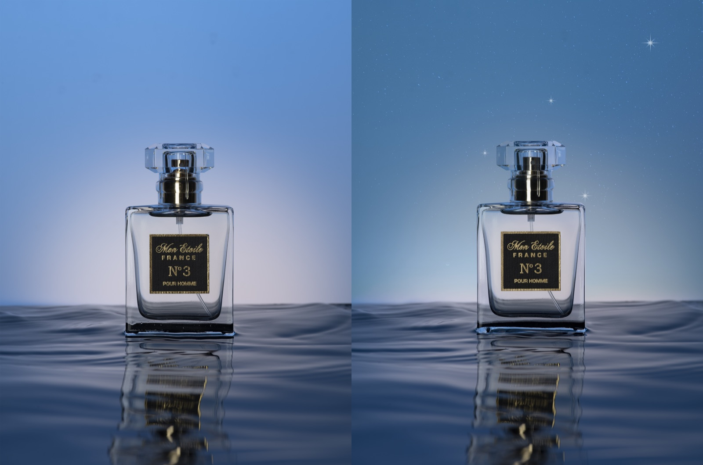
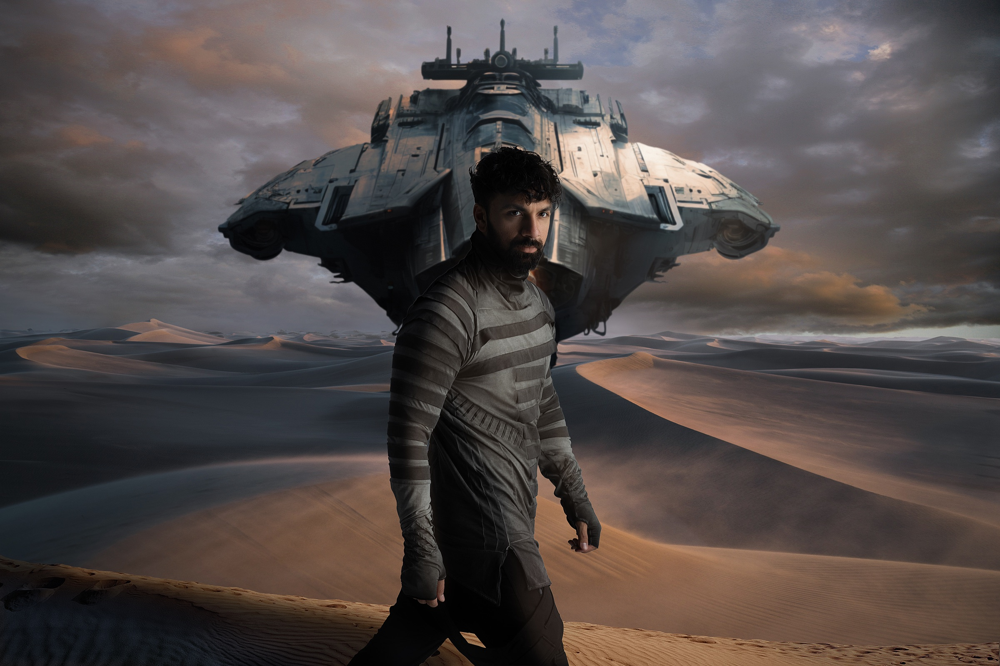
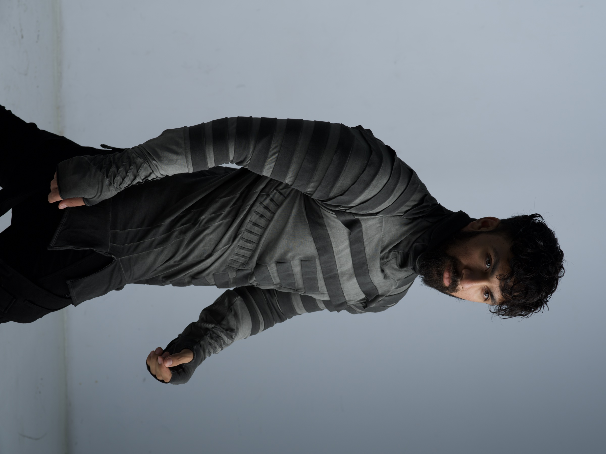
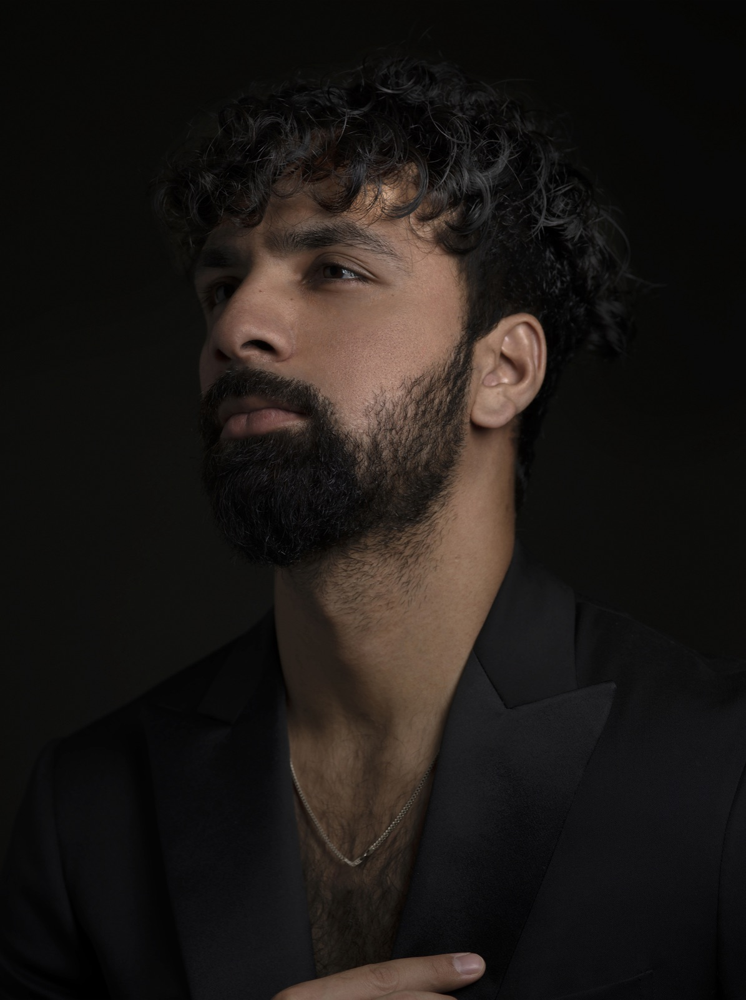
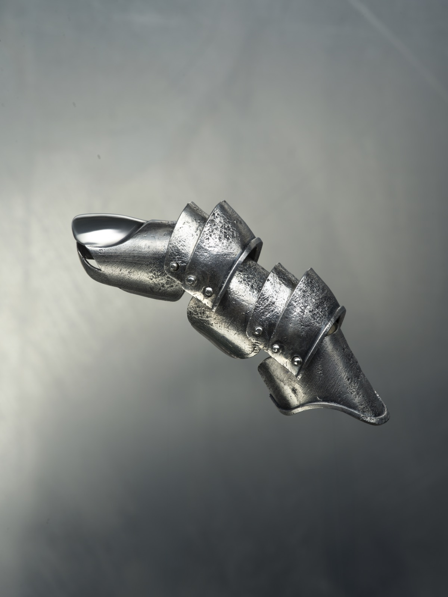
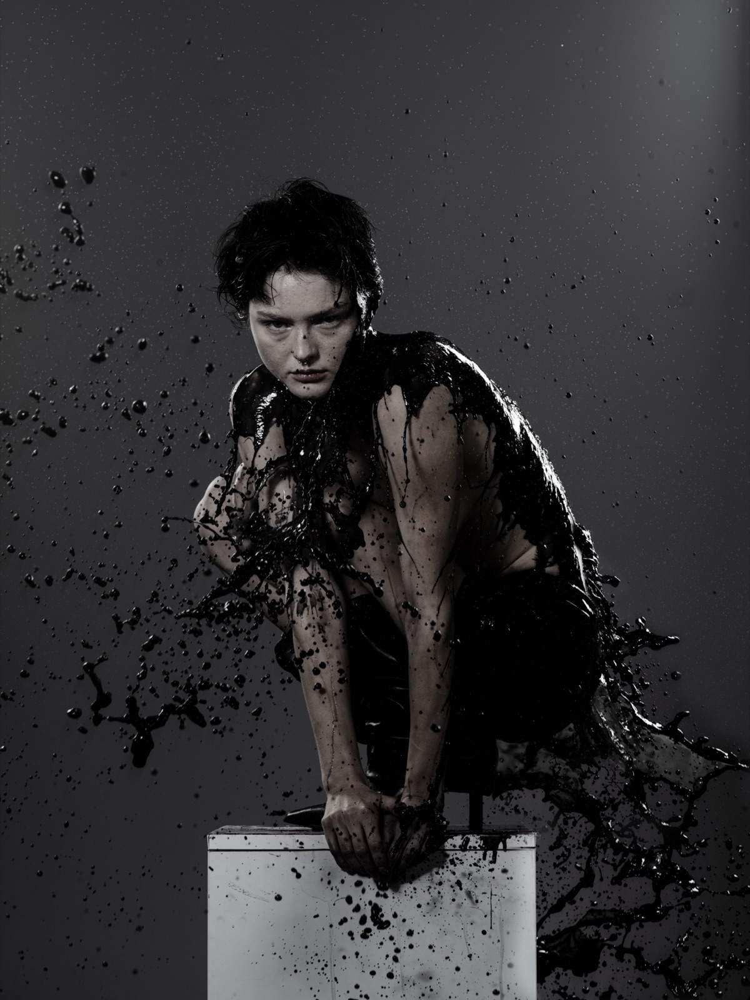
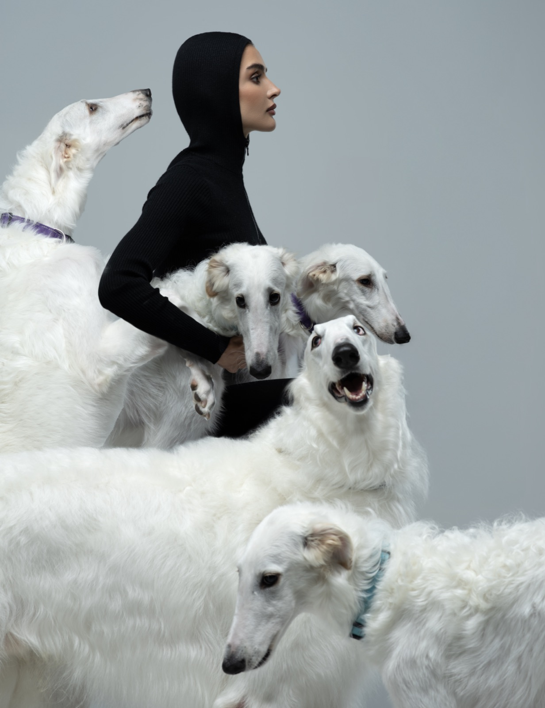

BEFOREAFTERMon Etoile Nº3
Perfume product shot. Deepened the backdrop into a night sky, added stars and sparkles, and cleaned up the bottle and its reflection.
- Photoshop
- Product
- Compositing
I retouch, grade and composite photos, and build small web tools that make creative work faster. Lately I build a lot of that with Claude.
Lightroom for the grade, Photoshop for the detail work. Drag the slider to compare the raw file with the finished edit.


A studio portrait shot on a plain grey backdrop, cut out and composited into a desert scene with a ship overhead. Drag the slider to see the original.

BEFOREAFTERPerfume product shot. Deepened the backdrop into a night sky, added stars and sparkles, and cleaned up the bottle and its reflection.

One light on a black backdrop. Retouched skin with the texture kept.

Jewelry shot with the metal's texture and rivets kept crisp against a soft steel gradient.

Editorial frozen mid-splash, with every drop kept sharp and a dark, desaturated grade.

Studio editorial in black and white tones: a model in profile among five white borzois.
I'm learning to code by building things I actually use in my editing work.
I use Claude to plan edits, write and debug code, and automate the boring parts of a creative workflow.
A Python tool that sends my photos to the Claude API and gets back an Instagram caption, hashtags and accessible alt text, in the tone I ask for.
A custom Claude Skill that turns a client brief into a full shoot plan: shot list, lighting setups, schedule, retouch plan and gear checklist.
I'm a photo editor and retoucher based in Dubai. I started editing five years ago, when the studio I was working for needed its own in-house editor, and I've been doing it ever since.
I work across portraits, fashion, product shots and composites, for clients ranging from fashion brands to perfume, makeup, wellness and home products.
I've also completed certified courses in Claude and AI-assisted coding. I use both to build tools that make creative work faster, like the projects above.